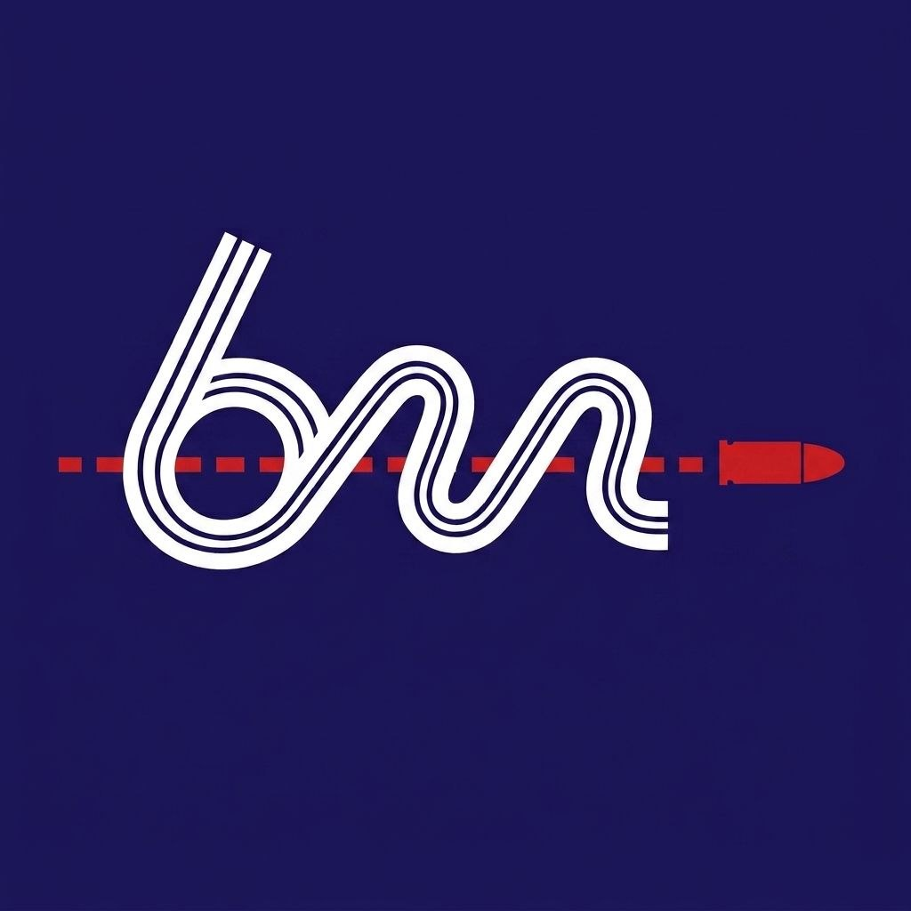

Biathlon
Market
Biathlon Market
Главная
Рейтинг
2026-06-26
RU
EN
0
Всего
0
Ср. рейтинг
0
Макс. цена (€)
0
Категорий
Все
🏆 Мужчины
🏆 Женщины
🌟 Юниоры
🌱 Юноши
🧒 Дети
⏳ Завершившие
Страна:
Все
🇷🇺 Россия
🌍 Мир
Возраст:
Все
U-23
24-30
31+
Пол:
Муж.
Жен.
Все
#
Фото
Имя
Возраст
Регион
Кат.
Рейтинг
Цена (€)
Δ
Показано 0 из 0
Карточка спортсмена